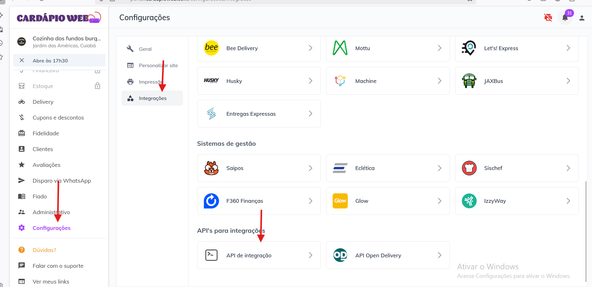
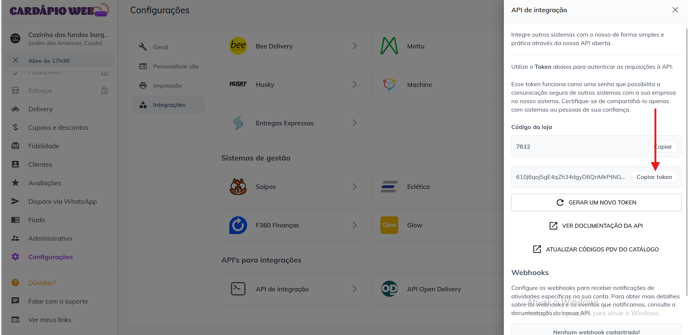
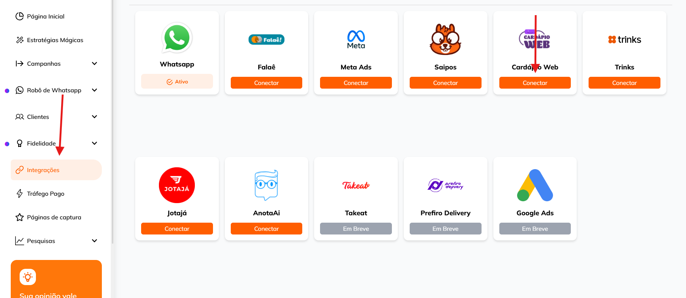
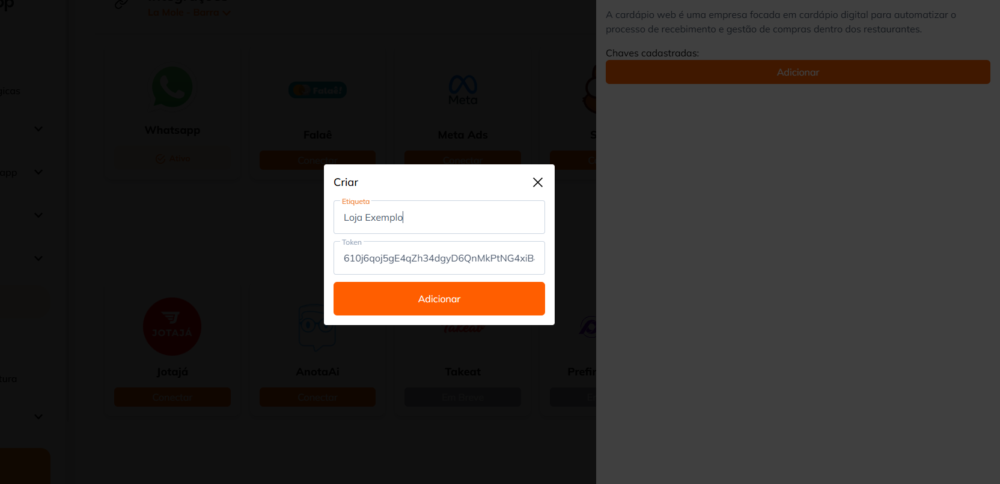
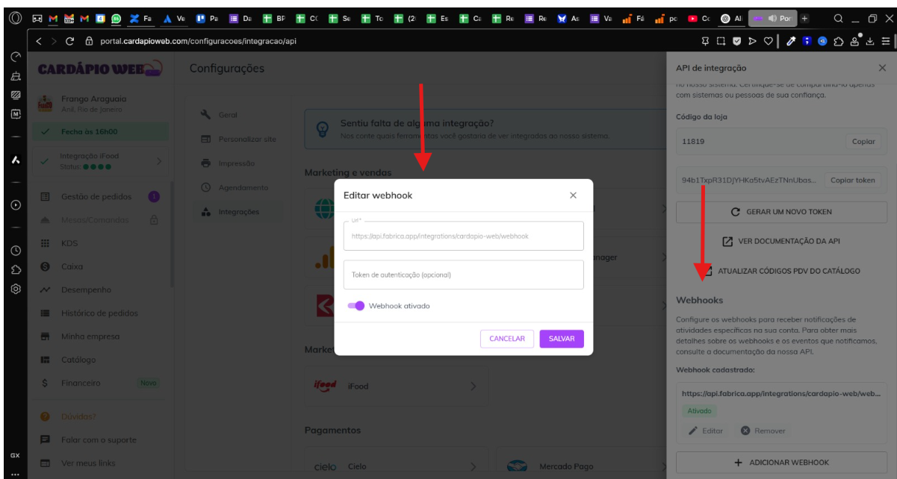
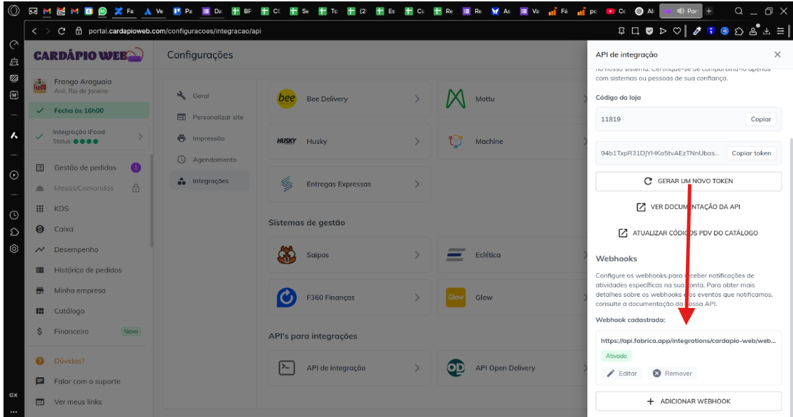

Guia de Sucesso Retorne.app
Jornada de Aprendizado
Aprenda de forma prática a operar a plataforma e ter grandes resultados. Clique nas opções abaixo para assistir vídeos tutoriais sobre a plataforma.
01. Comece por aqui. Comunidade Retorne.app
Link para comunidade: [aqui]
02. Conectando o seu whatsApp
Veja como é simples conectar o whatsapp ao sistema do Retorne.app
03. Integrações, subir base e checkin.
Como importar dados para o sistema. Conheça as três formas de importação e upload de dados para o Retorne.app
04. Disparos de campanhas por gatilhos
Crie réguas de comunicação baseadas em gatilhos.
05. Agendar disparos em massa
Acompanhe métricas e performance.
06. Roleta de prêmios - página de captura
Aprenda a configurar a roleta de prêmios e integrar no whatsapp.
07. Pesquisa de satisfação
Crie pesquisas, envie por link ou imprima QrCode e divulgue para entender mais seu cliente.
08. Validando cupons na plataforma
Veja como é simples validar cupons no Retorne.app
09. Relatório de Tráfego Pago
Integre o Meta Ads e tenha um relatório em tempo real a sua disposição.
10. Atendente Virtual com IA
Configure em poucos passos um poderoso Agente de IA dentro da Retorne.app
Dúvidas Frequentes
Conhecendo mais a Retorne.app
Sim! Basta acessar o menu Integrações, desconectar o número atual e conectar o novo número normalmente, como feito na primeira vez.
Sim. O sistema permite criar campanhas automáticas baseadas em gatilhos como última compra, inatividade, aniversário, entre outros. Além disso também permite enviar mensagens em massa de forma agendada. Os disparos são feitos de forma individual. A Retorne.app não usa lista de transmissões.
Sim. No momento de criar uma campanha em massa, você pode definir o dia e hora exatos para o disparo. Inclusive permite agendar para diversos dias e horários a mesma campanha.
Campanhas por gatilho são automáticas e contínuas, baseadas em ações do cliente. Já as campanhas em massa são disparos pontuais que você agenda ou envia para uma base segmentada.
O banimento pode acontecer se as políticas do WhatsApp forem violadas ou por excesso de denúncias. Lembre-se de pedir aos clientes para salvarem seu número e não enviar mensagens tipo SPAM para evitar denúncias. Utilize a funcionalidade de Hibernar clientes da plataforma para evitar que clientes recebam muitas mensagens em um intervalo curto de tempo e denunciem sua conta. Sempre use campanhas bem segmentadas para reduzir riscos.
Você pode importar contatos via planilha, check-in manual ou integração com outros sistemas. Não há limite de contatos, mas recomendamos bases limpas e atualizadas.
Ainda não. É preciso a validação manual ou verificar o uso no seu sistema final de gestão de cupons, caso opte por não usar o nosso validador, que cada cupom gerado pode ser validado dentro do painel do Retorne.app com apenas um clique.
O seu whatsapp segue funcionando normalmente e você poderá ter acesso as suas conversas, assistindo toda automação do Retorne.app gerando mais conversas e vendas para o seu negócio.
Sim! O Retorne.app possui API e integração com diversas plataformas. Consulte nossa equipe para orientações sobre a sua necessidade específica.
Acesse a área de Robô de Whatsapp e siga para “Agente IA” no menu. Lá você poderá treinar seu assistente, definir comandos, personalizar mensagens, definir voz ou até clonar voz para envio de áudio e ativar o atendimento automatizado via WhatsApp.
-
1. Na plataforma da Cardápio Web:
Configurações > Integrações > Api de Integrações > Copiar o TOKEN da Api de Integrações
  -
2. Após copiar o Token, ir na plataforma da Fabrica.app em:
Integrações > Cardápio Web > Adicionar > Etiqueta: “Nome da Loja” > Colar o Token copiado na Cardápio Web
Preencher os campos:
• Etiqueta: “Nome da Loja”
• Token: Colar o token copiado da Cardápio Web
  -
3. Voltar na Cardápio Web clicar em adicionar ou editar Webhook e inserir o link:
https://api.fabrica.app/integrations/cardapio-web/webhook
 
Pronto, agora seu cadastro na Cardápio Web já está integrado na Fabrica.app!